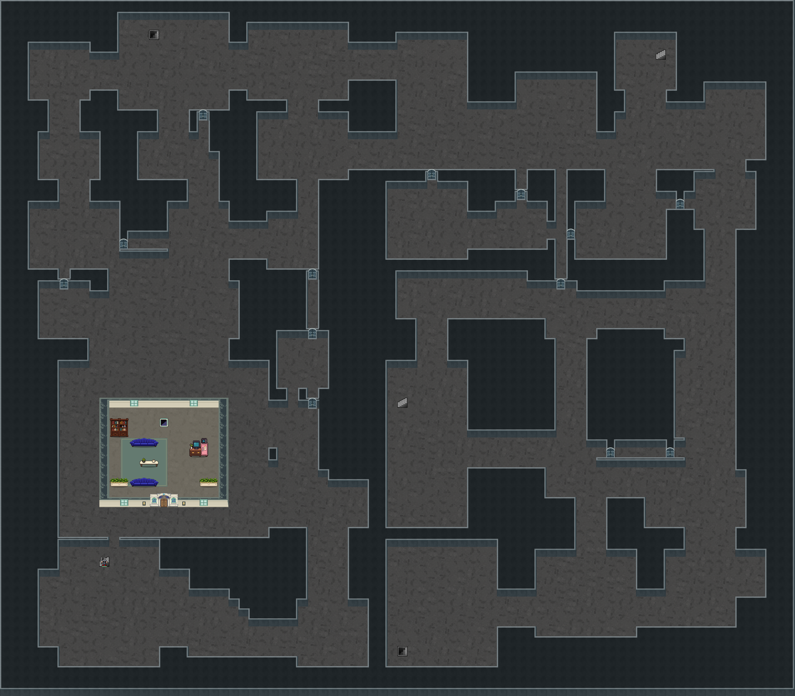

<!doctype html><html lang="ko"><meta charset="utf-8"><meta name="viewport" content="width=device-width,initial-scale=1"><title>잔향도시 랜덤1층 · 승인한32px 문</title><style>*{box-sizing:border-box}body{margin:0;background:#151e22;color:#e1eae5;font:16px/1.6 system-ui}main{max-width:1560px;margin:auto;padding:16px}h1{font-size:24px;margin:0}nav{display:flex;flex-wrap:wrap;gap:8px;margin:10px 0}button,a{background:#273934;color:#e1ece5;border:1px solid #688274;padding:6px 12px;font:inherit;text-decoration:none;cursor:pointer}.viewport{height:76vh;min-height:340px;overflow:auto;background:#0c1214;border:1px solid #566e62;text-align:center}img{image-rendering:pixelated;max-width:none;vertical-align:top}small{color:#adbbaf}</style><main><h1>잔향도시 · 같은 랜덤1층에32px 문 적용</h1><p>승인한32px 문 적용 · 80×70칸 · 일반문13개 · 홀로홈1곳 · 시드 <code>CITY153-78251b23</code></p><nav><button data-scale="fit">전체 보기</button><button data-scale="1">원본1배</button><button data-scale="2">도트2배</button><button data-state="closed">문 닫힘</button><button data-state="open">일반문 열림</button><a href="../doorfit155/?seed=CITY153-78251b23">이 지도에서 직접 이동</a><a href="../doorfit155/door-review.html">문 확대</a></nav><div class="viewport"></div><small>브라우저 생성·미술 검토본입니다. 확대 후 스크롤로 둘러볼 수 있습니다.</small></main><script>const im=document.getElementById("map"),v=document.querySelector(".viewport");let scale="fit";function fit(){const s=scale==="fit"?Math.min(v.clientWidth/im.naturalWidth,v.clientHeight/im.naturalHeight):Number(scale);im.style.width=Math.floor(im.naturalWidth*s)+"px";im.style.height=Math.floor(im.naturalHeight*s)+"px";}im.onload=fit;document.querySelectorAll("[data-scale]").forEach(b=>b.onclick=()=>{scale=b.dataset.scale;fit();});document.querySelectorAll("[data-state]").forEach(b=>b.onclick=()=>im.src="floor1-"+b.dataset.state+".png");addEventListener("resize",fit);</script></html>
